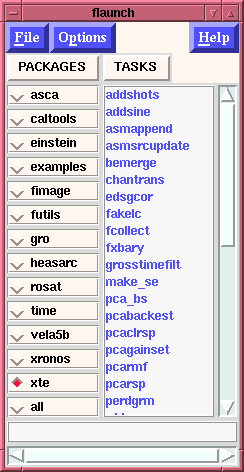
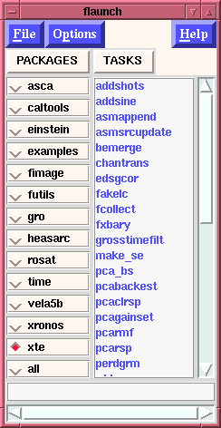

| 1.) |  | 2.) |  |
| 1.) | | 2.) |  |
Selecting any given package above results in seeing all tools within that packages (2.), a user may want to create a Custom package which contains only the tasks that they use most often. This can be done from within the "flaunch window" using the File menubutton and selecting the "Create a `Custom' package" option (or by striking Ctrl+u anywhere in the flaunch window). Several things will happen at this point, if the "flaunch window" isn't fully open, i.e., both Packages and Tasks aren't being displayed, they will be as can be seen in 2.) above (although the default "package" selected is "all"). In addition to this a "List of Selected Items" window will appear, 3.). This will also cause a binding between the right-most-mouse-button (Button-3) used to select a task or a group of tasks in the "flaunch" task-list and the "List of Selected Items" window that appears. So the user can use the "flaunch" window to display various tasks from various packages, and by clicking on them with Button-3 have them appear in the "List of Selected Items" window. If the user should make a mistake and wish to remove an item all that is required is to select that item within the "List of Selected Items" window with Button-1 (the left-most-mouse button). It will be removed from the list automatically. Once the user is satisfied with the tasks displayed in the list, the user can opt to save this list to a file - explained below.
| 3.) | 4.) |
Thus, if we create a "List of Selected Items" as shown in 3.) below, when the "File" menubutton is selected in the "List of Selected Item" window, and the "Save list to File?" option is selected, a file is created in $HOME/.flaunch with the name "custom_tasks", the "List of Selected Items" window is destroyed, and the "flaunch" window is updated as shown in 4.) to reflect the addition of the "custom" package, and will show what is listed within that file. [Note: For this display to be shown on start-up of "flaunch" the user will have to select the appropriate option, i.e., Read in `custom' package list if one exists?: ]
Once this option is set subsequent calls of "flaunch" will automatically display the custom package button, the user can select their own "custom" package and have it displayed so that they can easily activate these tasks. Successive creations of a "custom" package will overwrite previously created custom-task list.
Brian K. Elza Last modified: Mon Jul 28 14:45:50 EDT